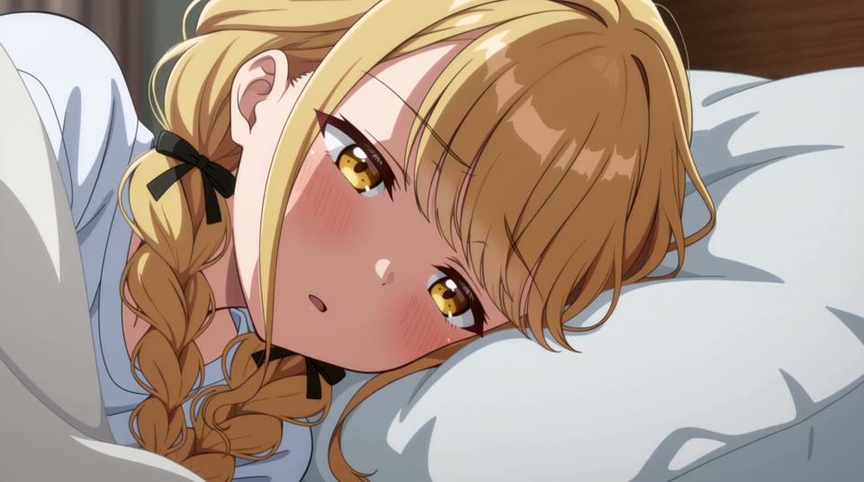
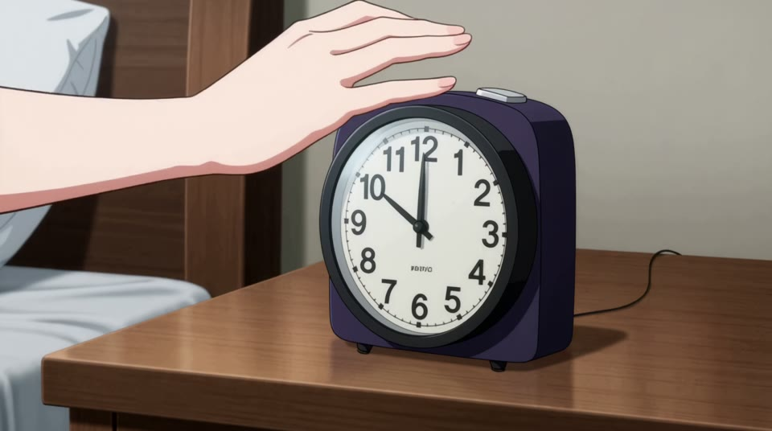
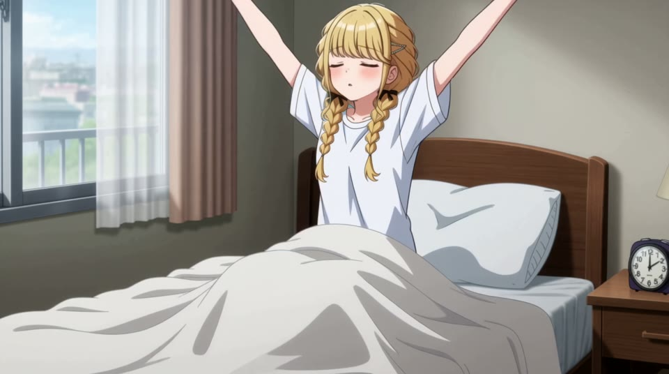

CLIP 01
잠에서 깨어나는 순간
알람 → 졸린 얼굴 → 기지개



알람과 손의 짧은 인서트로 행동을 연결하고, 얼굴 클로즈업으로 잠기운을 표현하도록 설계했습니다. 기지개에는 긴 호흡을 배정해 컷의 속도에 차이를 주었습니다.
고정 카메라 · 표정 중심의 클로즈업 · 알람이 멎은 뒤의 정적
클립 01 프롬프트 열기클립 01 프롬프트 닫기
원본 영상의 워크플로우에 저장된 입력 프롬프트입니다. 타임코드는 클립별로 0초부터 시작합니다.
subject_definitions:
<Subject 1>: Fujita Kotone, as identified by the user. Use <Picture 1> for character identity, facial design,
hairstyle, hair color, and 2D illustration style. Replace the reference outfit with an opaque, loose white T-shirt.
The bedroom, bed, bedding, bedside table, and alarm clock are requested scene additions. <Picture 1> is a character
and style reference, not an exact opening frame.
summary:
[reference generation] A 15-second, seven-shot 2D morning scene. <Subject 1> wakes reluctantly to an alarm, silences
it, briefly nestles back into the pillow, then sits up, stretches, and rubs one sleepy eye. Alternate environmental
framing, object inserts, and facial reactions. Keep every camera locked and use direct cuts only.
retention_analysis:
<Subject 1>: partially_preserved in [Shot 1] and [Shot 3]–[Shot 7]. Preserve the identity, facial design, hairstyle,
hair color, and drawing style assigned to <Picture 1>. Change outfit, setting, pose, and expression as specified. The
hand insert belongs to the same character.
detailed_description:
Use the 2D drawing and shading style of <Picture 1>, with stable linework, readable held poses, and selective
movement. Soft morning light enters from screen left. The alarm is on the character's right, appearing toward screen
right in the bedside compositions. Keep the room layout consistent. All cameras are static: no pan, zoom, tracking,
drift, or reframing. Use exactly seven shots. No dissolves, morphing transitions, extra cuts, or speed ramps.
[Shot 1] A fixed wide view establishes the modest bedroom, bed, and bedside table. <Subject 1>, retaining the identity
and hairstyle from <Picture 1>, lies under the bedding with the head visible on the pillow. Morning light falls across
the bed. At approximately half a second, the bedside alarm begins ringing.
At 00:01.000, [Shot 2] cut to a close-up of the ringing alarm on the table, with a small portion of the bed behind it.
Keep clock markings unobtrusive; no readable text is required.
At 00:02.000, [Shot 3] cut to a close-up of the character's face against the pillow. One cheek is gently compressed by
the pillow. The brow contracts slightly, then one eye opens narrowly and looks toward screen right, toward the alarm.
Keep the head resting. Convey sleepy reluctance through the eyelid and brow, without a large grimace.
At 00:04.000, [Shot 4] cut to the clock and the character's hand. The hand enters from the bed side, reaches the top
button, and presses it once. Stop the alarm exactly at contact. Let the fingers rest briefly after the press.
At 00:05.500, [Shot 5] return to the same facial framing as Shot 3. Both eyes close. The cheek nestles slightly deeper
into the pillow, then holds. This is a brief wish to remain asleep, not a new sleep sequence.
At 00:07.000, [Shot 6] cut forward in time to a waist-up view with the character already seated in bed, wearing the
white T-shirt and with the lower body covered by bedding. Start with the head slightly bowed. The character
straightens and raises both arms into one slow overhead stretch, eyes closed. Include the hands comfortably inside the
fixed frame. Hold the extended pose briefly.
At 00:11.000, [Shot 7] cut to a face close-up as the shoulders relax from that stretch. One hand rubs one closed eye
gently, then lowers out of frame. The eyes reopen slowly. Hold the still-sleepy expression through the final moment.
Avoid additional gestures.
overall_soundscape:
Begin with quiet room ambience. The alarm starts during Shot 1, continues uninterrupted through the following cuts,
and stops at the button press in Shot 4. Include a small button click and restrained pillow, bedding, and clothing
rustles. The sudden absence of the alarm should be noticeable. No dialogue, narration, or expressive vocal sounds.
non_diegetic_music:
N/A